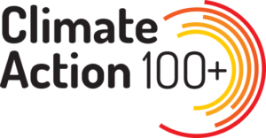

NUESTRA VISIÓN
Para ayudar a nuestros clientes a lograr un mejor retiro desde hoy, Afore SURA integra la sostenibilidad de forma transversal en sus inversiones. Al gestionar portafolios en representación de nuestros clientes, nos regimos bajo el deber fiduciario de ofrecerles el mejor retiro posible, que se ve afectado por el riesgo y el retorno de nuestras inversiones y por el mundo en el que nuestros clientes se retirarán.
Reconocemos que la generación de valor, el desempeño financiero y el desarrollo de negocios de las empresas, proyectos y estructuras en las que invertimos pueden verse impactados, de manera positiva o negativa, por factores ambientales, sociales o de gobierno corporativo. Nuestra visión es contar con una estrategia de inversión sólida, resiliente y rentable frente a los riesgos y las oportunidades en estas tres dimensiones a lo largo del tiempo.
En particular, reconocemos al cambio climático como un riesgo sistémico y una de las principales amenazas para el desarrollo armónico y sostenible de la sociedad. Por ello, estamos comprometidos con la transición hacia una economía mexicana y global baja en carbono y alineada a un aumento de la temperatura media del planeta por debajo de 1.5°C sobre niveles preindustriales, de acuerdo con el consenso científico y los estándares internacionales firmados por el gobierno mexicano.
NUESTRO ACTUAR
Nuestra estrategia de inversión sostenible se rige por la Política de Inversión Sostenible y la Política de Acompañamiento de las Inversiones de Afore SURA, publicadas en el apartado de sostenibilidad de nuestro sitio web.
⦿Hitos relevantes 2023
- Identificamos al cambio climático como un riesgo sistemático con prioridad de atención, pues la magnitud de su impacto no puede mitigarse a través de la diversificación. Para adaptarnos a esta realidad, consolidamos nuestro compromiso al desarrollar metas basadas en ciencia conforme a las metodologías de Science-Based Targets initiative (SBTi). A nivel de portafolio, esto se traduce en el diseño de una ruta de transición consistente con el mejor conocimiento científico frente al cambio climático.
- Continuamos robusteciendo el análisis de criterios ASG para la selección, asignación y monitoreo de gestores externos de acuerdo con las mejores prácticas establecidas por los Principios de Inversión Responsable.
- Realizamos análisis de escenarios climáticos para estudiar las sensibilidades del portafolio frente a diferentes incrementos de temperatura global de acuerdo con las diferentes políticas de adaptación y mitigación al cambio climático.
- Fuimos nombrados parte del Comité Directivo de Climate Action 100+, iniciativa liderada por inversores para impulsar que las empresas más grandes del mundo, por su volumen de emisores de GEI, tomen las medidas necesarias para transitar a una economía baja en carbono. 
- Nos adherimos a ESG Data Convergence Initiative para impulsar la divulgación de datos y métricas ASG en los gestores e inversiones de capital privado. Esta iniciativa fomenta que GPs (general partners/gestores) realicen un seguimiento de las métricas relacionadas con la sostenibilidad para las empresas de su cartera y las informen en un formato estandarizado a sus LPs (limited partners/inversionistas).

EMISIONES FINANCIADAS
La siguiente gráfica muestra el porcentaje de cobertura, por clase de activo, sobre el cual Afore SURA tiene una medición o estimación de las emisiones financiadas. El nivel de cobertura varía en función de la disponibilidad de información de fuentes primarias (por ejemplo, reportes de las empresas del portafolio) o secundarias (proveedores de información).
⦿EMISIONES DE GASES EFECTO INVERNADERO (GEI) EN LOS ALCANCES 1, 2 Y 3. (TONELADAS EQUIVALENTES DE DIÓXIDO DE CARBONO: tCO2eq)
- Alcance 1 y 2: 2.3 millones de tCO2eq.
- Alcance 3 *: 10.8 millones de tCO2eq.
- La cobertura del portafolio sujeto a medición representa el 86% de los activos bajo administración. Se excluyen los instrumentos alternativos, las bursatilizaciones y las posiciones equivalentes a efectivo.
Nota 1:Las cifras del Alcance 3 se encuentran en constante mejora por parte de las empresas. Se estima que estos datos podrían registrar volatilidad significativa en el futuro cercano.